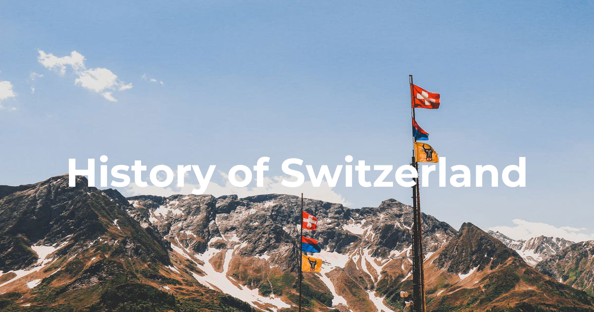
The oldest traces of human existence are about 150,000 years old, while the oldest flint tools that have been found are about 100,000 years old.
The territory of the present-day Switzerland developed in a similar way to that of the rest of Europe. The first centuries were marked by migration, resulting in the area being inhabited by different peoples. With the rule of the Romans, Christianity spread, and the Church with its bishoprics and monasteries became an important landowner. At the same time, aristocratic families increased their power by conquest, inheritance and marriage policy. For a short time, the Frankish king Charlemagne controlled a significant part of Western Europe. In 962 another sphere of power came into being when the German king Otto I persuaded the Pope to appoint him Emperor of the Holy Roman Empire.
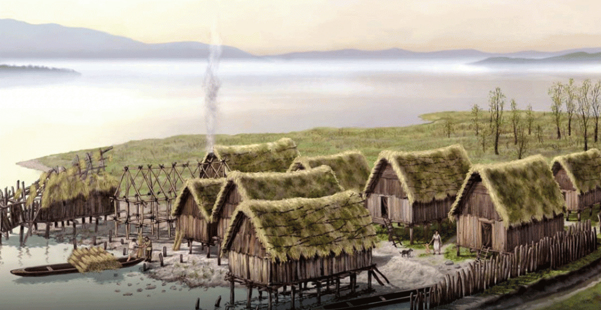
Some of the most interesting archaeological finds in Switzerland are those of the lakeside settlements with their houses built on piles. The oldest date from the 4th millennium BC, and shed light on life before the time of the Helvetians, Rhaetians and Romans.
Between the 1st century BC and the first decade AD, the area covered by present-day Switzerland was gradually incorporated into the Roman Empire. Roman rule ended in 401 AD, but Roman structures remained in parts of Switzerland until the early Middle Ages.
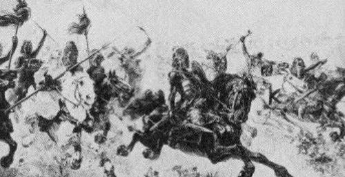
After the Romans departed, the kingdom of Burgundy ruled Western Switzerland, the Alemanni controlled central and eastern Switzerland, and the Alpine regions remained in the hands of local Gallo-Roman rulers.
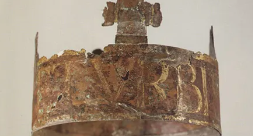
When the Ottonians and Saliers (925 - 1125) occupied the German imperial throne, the areas of Switzerland were divided between the Kingdom of Burgundy , the duchy of Swabia, the Duchy of Bavaria and the Kingdom of Italy. These all formed part of the "Holy Roman Empire of the German Nation" under the German Emperor.
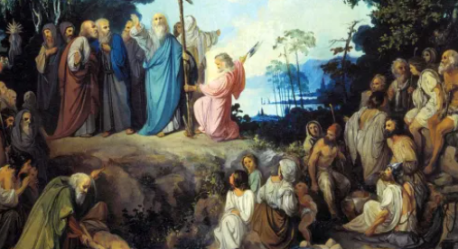
It was in the ancient Roman cities and along the Roman trade routes that Christianity first spread in Switzerland. A further Christianisation took place with the wandering monks in the 7th century when they founded various monasteries.
1291 is traditionally regarded as being the founding year of the Confederation – this was when three rural valley communities banded together in order to be better prepared for attacks from the outside.
In the 14th and 15 centuries there developed a loose federation with rural and urban members. By the end of the 15th century it was strong enough to affect the balance of power in Europe. Various wars were fought in which the Confederates displayed courage and ingenuity, and they gained a reputation as a formidable opponent in combat. The Confederation was enlarged in various ways with some areas joining voluntarily and as equal members while others were more or less forced. The members of the Confederation mainly administered the affairs of their own regions but representatives of each area also met regularly to discuss issues of common interest.
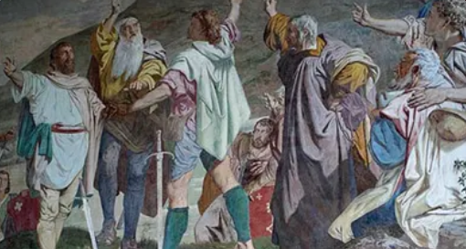
The Old Confederacy was created as a loose alliance of three valleys in central Switzerland: Uri, Schwyz and Unterwalden. They were rebelling against the governors of the Counts of Habsburg. The sought a recovery of old rights of autonomy and not a disengagement from the German Reich.
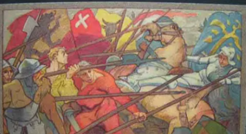
The expansion of the Confederation did not proceed entirely smoothly. As the danger from the outside subsided, the cantons became more inclined to look after their individual interests – and vice versa.
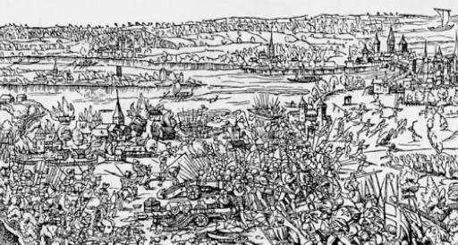
Two wars brought about the end of this policy of expansion: The victorious Swabian War in the north and the Italian campaigns in the south, in which the Confederates were defeated.
The 16th century in Western Europe was dominated by the Reformation, a movement which divided western Christianity into two camps.
Although the riots and destruction were fought on a religious level, this reflected, above all, the desire for social change and the social tensions that existed primarily between town and country. The 17th century saw three further landmarks in the development of modern-day Switzerland. All came as a result of the 30 Years' War (1618-48). While large parts of Europe were involved in this war, the Confederation remained neutral. An important consequence of the Thirty Years' War was Swiss independence from the Holy Roman Empire, which was formally recognised by the Treaty of Westphalia.
The Reformation in Switzerland involved various centres and reformers. A major role was played by Ulrich Zwingli, who was active from 1523 in Zurich, and John Calvin, who from 1536 transformed Geneva into what was called the "Protestant Rome".
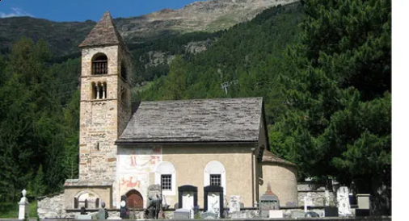
As elsewhere in Europe, the Reformation plunged the Confederation into religious wars. These often also led to renewals within the Catholic Church and its territories.
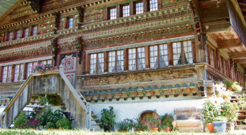
In the 17th century, the Confederation consisted of various territories whose inhabitants enjoyed greatly varying amounts of freedom depending on where they lived.
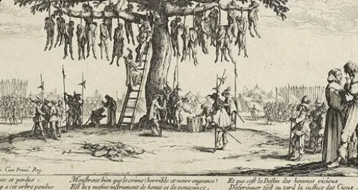
The Confederation stayed out of the war, with only the Associated Place of Graubünden being drawn into the hostilities. The Thirty Years’ War ended for the Confederation with its separation from the Holy Roman Empire of the German Nation.
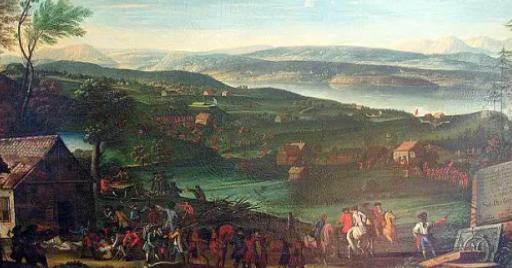
The conflicts between rulers and subjects in Lucerne, Bern, Solothurn and Basel culminated in 1653 in the Swiss Peasants’ War. The religiously motivated Villmergen Wars of 1656 and 1702 led to the loss of Catholic supremacy.
In 1798, French troops invaded Switzerland and proclaimed a centralised state. Later, the old cantonal system was restored - albeit in a more centralised form.
In 1798, French troops invaded Switzerland and created the centralised Helvetic Republic. For the first time in its history, Switzerland was forced to abandon its neutrality and to provide troops for France. After the Sonderbund War, the foundations for the modern Switzerland were finally laid down with the adoption of the Constitution of 1848. It brought about a more centralised form of government and a single economic area, which put an end to the cantonal rivalries and enabled economic development. Despite this progress, the 19th century was a difficult time for many people in Switzerland. Poverty, hunger and poor job prospects led to a wave of emigration, including to North and South America.
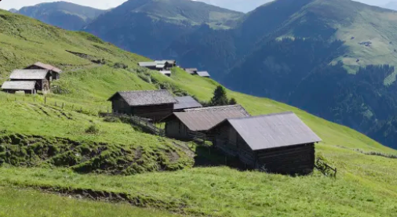
Not everyone benefited from the economic and social developments of the 18th century. This led to tensions, riots and the formation of the Helvetic Society.
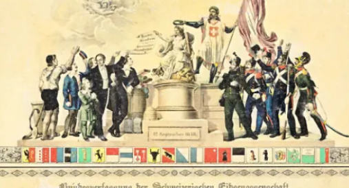
With the Federal Constitution of 1848 and 1874, the Confederation changed from a confederation of cantons to a federal state. In the course of the 19th century a system of political parties was gradually established.
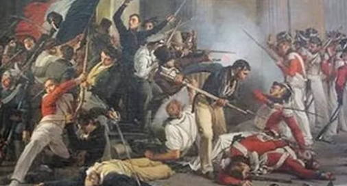
The French Revolution and the subsequent Napoleonic wars changed the face of Europe. Napoleon's invasion of Switzerland was a turning point in the country's history.
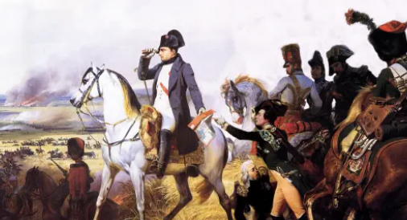
Napoleon realised that the centralised unitary state in Switzerland, given its linguistic, cultural and religious differences, stood no chance. Therefore, he submitted a draft federal constitution.
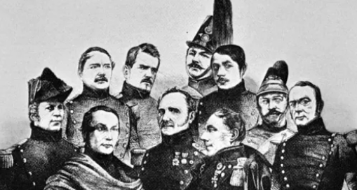
After Napoleon, Switzerland once more became a confederation in which the cantons again had greater autonomy. However, tensions between the conservatives and progressives steadily increased, culminating in the Sonderbund War.
The 20th century was generally marked by a series of striking developments in the political, economic and social arenas.
Domestically there was a shift towards a multi-party system. While at the beginning of the century one party occupied all the positions in the government (Federal Council), there were four parties represented there at the end of the century. Agrarian Switzerland developed into an industrial state with the result that there were more immigrants than emigrants and the standard of living rose significantly. Working conditions and social security steadily improved and there was greater access to a more extensive range of consumer goods. The development of the export sector changed the country’s relationship with Europe and the rest of the world. Although Switzerland remained politically neutral – it did not actively participate in either of the two World Wars – neutrality remained the subject of intense debate.
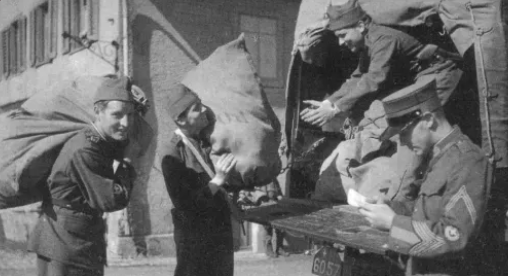
The period after World War I was marked by reconstruction, short-term economic recovery and changes in policy – as well as the rise of fascism in Europe.
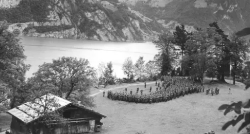
Before and during World War II, Switzerland's main goal was to preserve its independence and to stay out of the fighting.
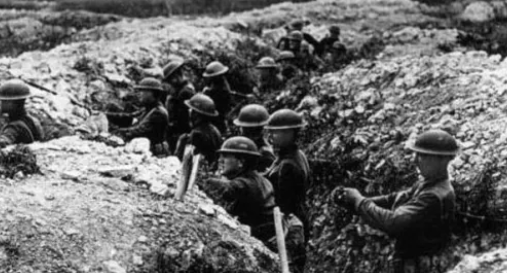
Switzerland as a small neutral state was spared from direct military events during World War I. In economic and social terms, however, Switzerland went through a difficult period.
Rapid technical progress and economic growth after the 2nd World War resulted in material prosperity. Switzerland succeeded in establishing itself as a major player on the world markets.